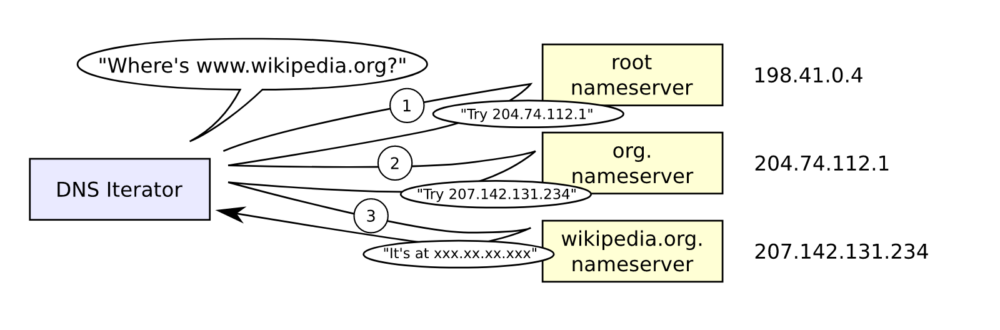

What Is IP Adress?

The Definition Of IP Adress
An Internet Protocol address (IP address) is a numerical label assigned to each device connected to a computer network that uses the Internet Protocol for communication.An IP address serves two main functions: host or network interface identification and location addressing.
What Is The Function Of IP Adress?
An IP address serves two principal functions. It identifies the host, or more specifically its network interface, and it provides the location of the host in the network, and thus the capability of establishing a path to that host. Its role has been characterized as follows: "A name indicates what we seek. An address indicates where it is. A route indicates how to get there." The header of each IP packet contains the IP address of the sending host, and that of the destination host.
IP Adress Assignment
IP addresses are assigned to a host either dynamically as they join the network, or persistently by configuration of the host hardware or software. Persistent configuration is also known as using a static IP address. In contrast, when a computer's IP address is assigned each time it restarts, this is known as using a dynamic IP address.
Dynamic IP addresses are assigned by network using Dynamic Host Configuration Protocol (DHCP). DHCP is the most frequently used technology for assigning addresses. It avoids the administrative burden of assigning specific static addresses to each device on a network. It also allows devices to share the limited address space on a network if only some of them are online at a particular time. Typically, dynamic IP configuration is enabled by default in modern desktop operating systems.
The address assigned with DHCP is associated with a lease and usually has an expiration period. If the lease is not renewed by the host before expiry, the address may be assigned to another device. Some DHCP implementations attempt to reassign the same IP address to a host (based on its MAC address) each time it joins the network. A network administrator may configure DHCP by allocating specific IP addresses based on MAC address.
DHCP is not the only technology used to assign IP addresses dynamically. Bootstrap Protocol is a similar protocol and predecessor to DHCP. Dialup and some broadband networks use dynamic address features of the Point-to-Point Protocol.
Computers and equipment used for the network infrastructure, such as routers and mail servers, are typically configured with static addressing.
In the absence or failure of static or dynamic address configurations, an operating system may assign a link-local address to a host using stateless address autoconfiguration.

(ALL OF THE ELETRONIC DEVICES HAS DIFFERENT IP ADRESS)